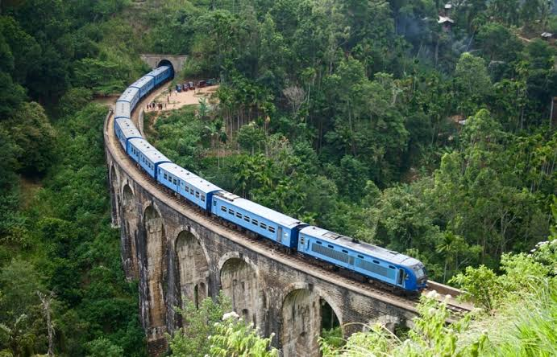
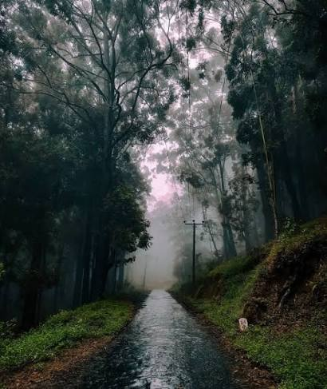
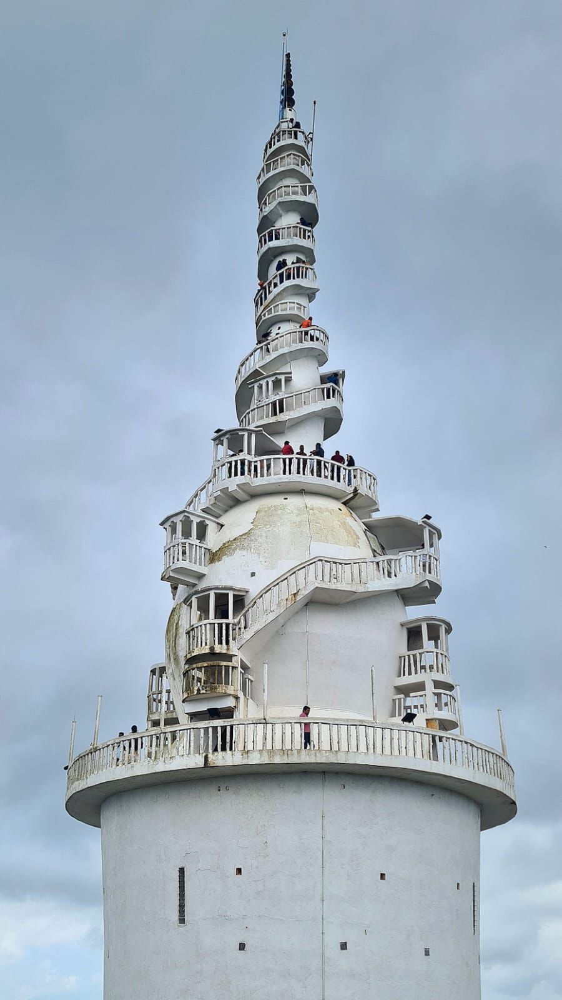
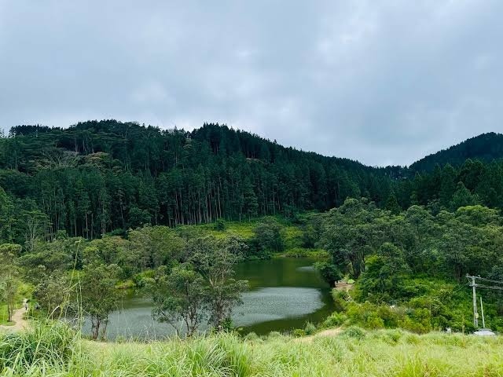

Riverstonis a breathtaking, misty mountain peak and valley region situated in the Matale District of Sri Lanka, forming a key ecological part of the UNESCO World Heritage-listed Knuckles Mountain Range. Located roughly 30 kilometers from Matale town and 60 kilometers from Kandy, it is widely celebrated for its dramatically fast-changing weather, fierce winds, pristine waterfalls, and panoramic trekking terrain.

Ella (often spelled "Alla") is a beautiful, laid-back mountain town located in the Badulla District of Sri Lanka's Uva Province. Situated at an elevation of 1,041 meters above sea level, it is famous for its cool mountain climate, sweeping views, lush green tea plantations, and endless outdoor adventures.

Ohiya is a peaceful, secluded mountain village located in the Badulla District of Sri Lanka's Uva Province. Sitting at an elevation of 1,774 meters, it serves as the ultimate gateway to Horton Plains National Park and is highly celebrated by nature lovers for its misty climate, pine forests, and quiet trekking trails.

Ambuluwawa Tower is a striking 48-meter-tall (157 feet) white spiral tower situated atop the Ambuluwawa Mountain peak in Gampola, approximately 20 kilometers southwest of Kandy. Rising 1,087 meters above sea level, it serves as the centerpiece of the Ambuluwawa Biodiversity Complex, offering breathtaking 360-degree panoramas of Sri Lanka's central highlands. The site is famous worldwide for its narrow, adrenaline-inducing exterior staircase that wraps tightly around the tower, tapering progressively until the path is barely wide enough for a single person near the summit.

Bellwood is a serene, misty mountain village situated roughly 20 kilometers away from Kandy City in the Central Province of Sri Lanka. Often affectionately called "Little New Zealand" by travelers due to its rolling green hills, lush tea estates, and cool climate, it has rapidly grown into a popular hidden gem for eco-tourism.